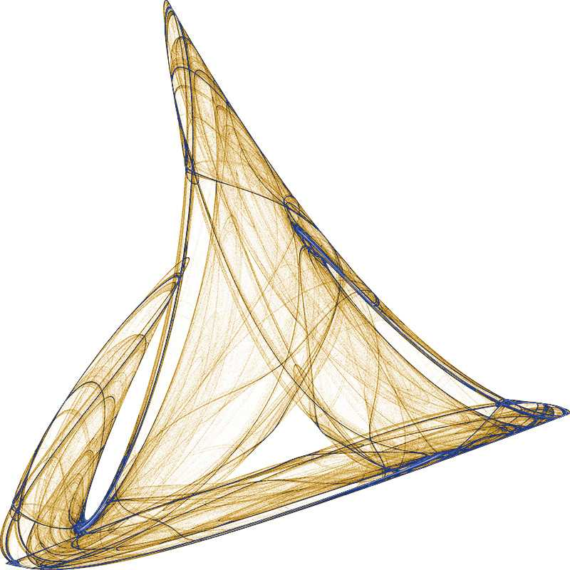
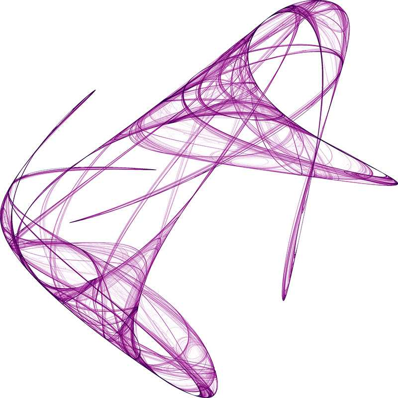

Random Attractors
Found using Lyapunov Exponents
Written by Paul Bourke
October 2001
Contribution by Philip Ham: attractor.basic
and Python implementation by Johan Bichel Lindegaard.
This document is "littered" with a
selection of attractors found using the techniques described.
In order for a system to exhibit chaotic behaviour it must be non linear.
Representing chaotic systems on a screen or on paper leads one to
considering a two dimensional system, an equation in two variables.
One possible two dimensional non-linear system, the one used
here, is the quadratic map defined as follows.
xn+1 =
a0 +
a1 xn +
a2 xn2 +
a3 xn yn +
a4 yn +
a5 yn2
yn+1 =
b0 +
b1 xn +
b2 xn2 +
b3 xn yn +
b4 yn +
b5 yn2
The standard measure for determining whether or not a system is chaotic
is the Lyapunov exponent, normally represented by the lambda symbol.
Consider two close points at step n, xn and
xn+dxn. At the next time step they
will have diverged, namely to xn+1 and
xn+1+dxn+1. It is this average
rate of divergence (or convergence) that the Lyapunov exponent captures.
Another way to think about the Lyapunov exponent is as the rate at
which information about the initial conditions is lost.
There are as many Lyapunov exponents as dimensions of the phase space.
Considering a region (circle, sphere, hypersphere, etc) in phase space
then at a later time all trajectories in this region form an
n-dimensional elliptical region. The Lyapunov exponent can be calculated for
each dimension.
When talking about a single exponent one is normally referring to the
largest, this convention will be assumed from now onwards.
If the Lyapunov exponent is positive then the system is chaotic and unstable.
Nearby points will diverge irrespective of how close they are. Although there
is no order the system is still deterministic!
The magnitude of the Lyapunov exponent
is a measure of the sensitivity to initial conditions, the primary
characteristic of a chaotic system.
If the Lyapunov exponent is less than zero then the system attracts to
a fixed point or stable periodic orbit. These systems are non conservative
(dissipative). The absolute value of the exponent indicates the degree
of stability.
If the Lyapunov exponent is zero then the system is neutrally stable, such
systems are conservative and in a steady state mode.
To create the chaotic attractors shown on this page
each parameter an and bn in the quadratic
equation above is chosen at random between some bounds (+- 2 say).
The system so specified is generated
by iterating for some suitably large number of time steps
(eg; 100000) steps during which time the image is created
and the Lyapunov exponent computed. Note that the first few (1000) timesteps
are ignored to allow the system to settle into its "natural" behaviour.
If the Lyapunov exponent indicates
chaos then the image is saved and the program moves on to the
next random parameter set.
There are a number of ways the series may behave.
It may converge to a single point, called a fixed point. These
can be detected by comparing the distances between successive
points. For numerical reasons this is safer than relying on the
Lyapunov exponent which may be infinite (logarithm of 0)
It may diverge to infinity, for the range (+- 2) used here for
each parameter this is the most likely event. These are also easy
to detect and discard, indeed they need to be in order to avoid
numerical errors.
It will form a periodic orbit, these are identified by their
negative Lyapunov exponent.
It will exhibit chaos, filling in some region of the plane.
These are the solutions that "look good" and the ones we wish to
identify with the Lyapunov exponent.
It should be noted that there may be visually appealing structures
that are not chaotic attractors. That is, the resulting image is different
for different initial conditions and there is no single basin of attraction.
It's interesting how we "see" 3 dimensional structures in these essentially
2 dimensional systems.

The software used to create these images is given here:
gen.c. On average 98% of the random
selections of (an, bn) result
in an infinite series. This is so common because of
the range (-2 <= a,b <= 2) for each of the parameters
a and b, the number of infinite cases will reduce greatly with
a smaller range.
About 1% were point attractors, and
about 0.5% were periodic basins of attraction.
Image courtesy of Robert McGregor, Space Coast of Florida.
Launch trail perhaps 30 minutes after the shuttle launch (June 2007)
dispersing from a column into a smoke ring
due to some unusual air currents in the upper atmosphere.
|

References
Berge, P., Pomeau, Y., Vidal, C.,
Order Within Chaos, Wiley, New York, 1984.
Crutchfield, J., Farmer, J., Packard, N.
Chaos, Scientific American, 1986, 255, 46-47
Das, A., Das, Pritha, Roy, A
Applicability of Lyapunov Exponent in EEG data analysis.
Complexity International, draft manuscript.
Devaney, R.
An Introduction to Chaotic Dynamical Systems, Addison-Wesley, 1989
Feigenbaum, M.,
Universal behaviour in Nonlinear Systems, Los Alamos Science, 1981
Peitgen, H., Jurgens, H., Saupe, D
Lyapunov exponents and chaotic attractors in Chaos and fractals
- new frontiers of science. Springer, new York, 1992.
Contributions by Dmytry Lavrov
| {kind=link}